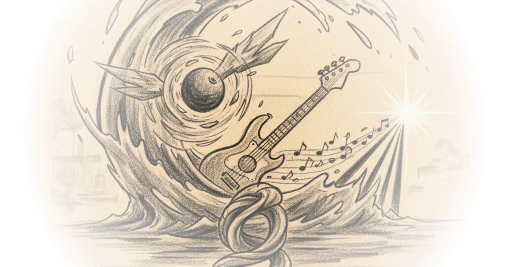
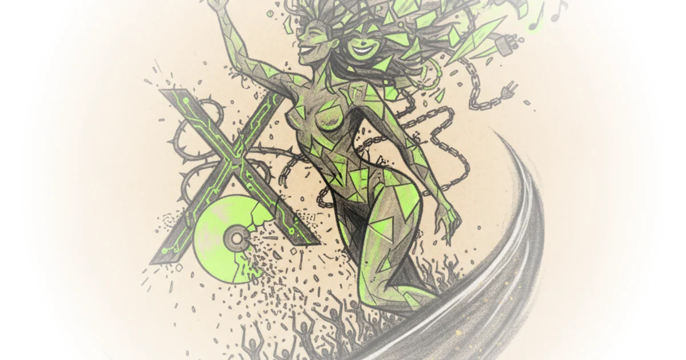

How to get cocteau twins guitar tone in 10 minutes! Josh Scott · JHS Pedals ·Apr 23, 2025 · 10 min read · Music
Mixwave turns your favorite jhs pedals into plugins (morning glory, pulp n peel, hard drive & more) Josh Scott · JHS Pedals ·Apr 7, 2025 · 17 min read · Music
Fascism wants to disintegrate US Brandon Taylor · Sweater Weather ·Mar 30, 2025 · 15 min read · Music
Finding the right delay pedal for you | a guide to jhs delay pedals Josh Scott · JHS Pedals ·Mar 19, 2025 · 13 min read · Music
Playing 16 pedals and losing our minds (fender, behringer, danelectro, walrus, ehx, and more!) Josh Scott · JHS Pedals ·Mar 12, 2025 · 16 min read · Music
How to build the jhs pedals 3-series fuzz - short circuit episode: 21 Josh Scott · JHS Pedals ·Feb 3, 2025 · 56 min read · Music
"A bar song" and the ny bar: Shaboozey, drake, and scalable value in a financialized music industry Robin James · ·Jan 26, 2025 · 12 min read · Music
How to build a hybrid germanium-silicon fuzz face - short circuit episode: 20 Josh Scott · JHS Pedals ·Jan 16, 2025 · 45 min read · Music
How to build a germanium fuzz face - pnp transistor selection / biasing - short circuit episode: 19 Josh Scott · JHS Pedals ·Jan 9, 2025 · 51 min read · Music
Last splash as the ür-text of 90s modern rock Robin James · ·Jan 6, 2025 · 11 min read · Music 
How to buld a silicon fuzz face - jhs smiley legends of fuzz - short circuit episode: 18 Josh Scott · JHS Pedals ·Dec 27, 2024 · 42 min read · Music
"Girl, so confusing," femme cool, and resolution over resilience Robin James · ·Dec 19, 2024 · 11 min read · Music 
Nightmare fuzz face kit doesn’t end well - short circuit episode: 17 Josh Scott · JHS Pedals ·Dec 16, 2024 · 55 min read · Music
How to mod a big muff fuzz with the jhs "moon pie" modifications - short circuit episode: 16 Josh Scott · JHS Pedals ·Dec 9, 2024 · 59 min read · Music
The obscure world of model train synthesizers Benn Jordan · Benn Jordan ·Dec 8, 2024 · 12 min read · Music
How to build the jack white / third man fuzz-a-tron fuzz pedal kit - short circuit episode: 15 Josh Scott · JHS Pedals ·Dec 2, 2024 · 66 min read · Music
How to modify a boss blues drive bd-2 overdrive pedal - short circuit episode 14 Josh Scott · JHS Pedals ·Nov 25, 2024 · 57 min read · Music
How to modify a danelectro daddy o overdrive pedal - short circuit episode 13 Josh Scott · JHS Pedals ·Nov 18, 2024 · 49 min read · Music
Ross sells out - (hang out with josh as we bring in our biggest sale of the year) Josh Scott · JHS Pedals ·Nov 15, 2024 · 59 min read · Music
What did i do wrong? (Learning from failure) ross pedals Josh Scott · JHS Pedals ·Nov 12, 2024 · 28 min read · Music
We proved it: AI mastering is a waste of money Benn Jordan · Benn Jordan ·Oct 23, 2024 · 23 min read · Music
What does affirmative action backlash have to do with 90s alt rock & today's alt right? Robin James · ·Oct 12, 2024 · 17 min read · Music
Making of crash course: Live sound design with the team! #Learnathon2024 Crash Course · Crash Course ·Sep 4, 2024 · 47 min read · Music
Turning an abandoned barn into my dream studio 💸 Benn Jordan · Benn Jordan ·Jul 30, 2024 · 29 min read · Music
Episode 12: Josh's version of the perfect electra distortion Josh Scott · JHS Pedals ·Jul 25, 2024 · 54 min read · Music
Episode 11: Building an electra with germanium transistors Josh Scott · JHS Pedals ·Jul 23, 2024 · 52 min read · Music